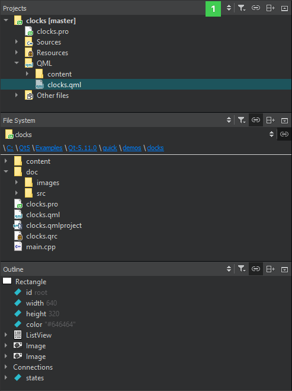

Working with Sidebars
In the Edit mode, you can use a left and right sidebar to organize different views into project contents. Only views that are relevant to the mode you are working in are available in it.
You can select views in the sidebar menu (1):

You can change the view of the sidebars in the following ways:
- To toggle the left sidebar, click (Hide Left Sidebar/Show Left Sidebar) or press Alt+0 (Cmd+0 on macOS). To toggle the right sidebar, click
 (Hide Right Sidebar/Show Right Sidebar) or press Alt+Shift+0 (Cmd+Shift+0 on macOS).
(Hide Right Sidebar/Show Right Sidebar) or press Alt+Shift+0 (Cmd+Shift+0 on macOS). - To split a sidebar, click (Split). Select new content to view in the split view.
- To close a sidebar view, click (Close).